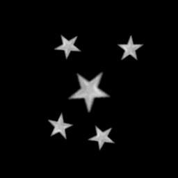

ef_star;
Returns: N/A.
This constant is for use in the functions effect_create_above and effect_create_below,
and will create a star effect as illustrated in the image below:

repeat(10)
{
effect_create_above(ef_star, x - 32 + random(64), y - 32 + random(64), choose(0, 1, 2), c_yellow);
}
The above code will create 10 random sized, yellow stars at a random position around the instance running the code.